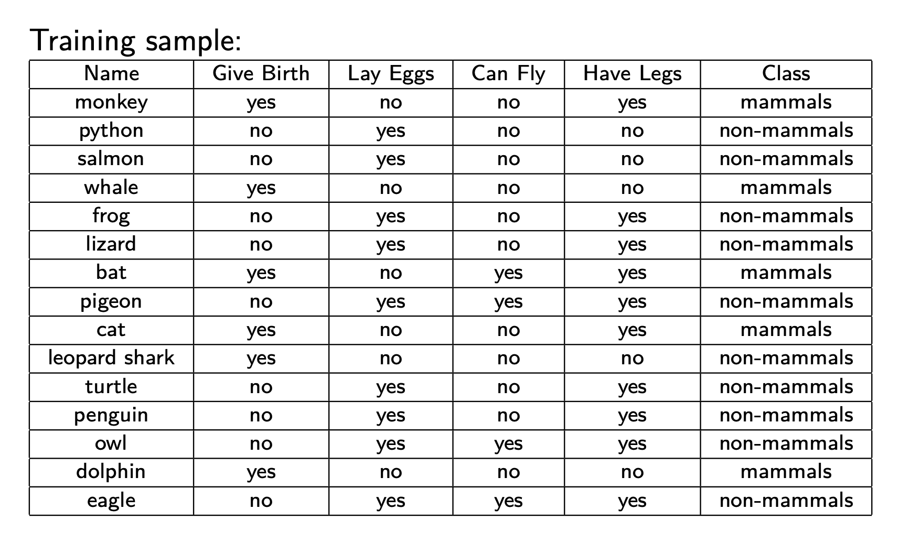

Content
Bayesian Classifiers, Idiot’s Bayes .
Choose value of
C C C that maximizes
P ( C ∣ A 1 , A 2 , . . . , A n ) P (C|A_1, A_2, . . . , A_n) P ( C ∣ A 1 , A 2 , ... , A n )
C : = max C P ( C ∣ A 1 , . . . , A n ) = max C P ( A 1 , . . . , A n ∣ C ) P ( C ) P ( A 1 , . . . , A n ) ∝ max C P ( A 1 , . . . , A n ∣ C ) P ( C ) \begin{align*}C&:=\max_CP(C|A_1,...,A_n)\\&=\max_C\cfrac{P(A_1,...,A_n|C)P(C)}{P(A_1,...,A_n)}\\&\propto\max_CP(A_1,...,A_n|C)P(C)\end{align*}
C := C max P ( C ∣ A 1 , ... , A n ) = C max P ( A 1 , ... , A n ) P ( A 1 , ... , A n ∣ C ) P ( C ) ∝ C max P ( A 1 , ... , A n ∣ C ) P ( C ) how to estimate P ( A 1 , . . . , A n ∣ C ) P (A_1, . . . , An|C) P ( A 1 , ... , A n ∣ C )
Assume independence among attributes A i A_i A i P ( A 1 , . . . , A n ∣ C j ) = ∏ i = 1 n P ( A i ∣ C j ) P(A_1,...,A_n|C_j) =\prod\limits_{i=1}^nP(A_i|C_j) P ( A 1 , ... , A n ∣ C j ) = i = 1 ∏ n P ( A i ∣ C j )
C : = max C P ( C ∣ A 1 , . . . , A n ) = max C P ( A 1 , . . . , A n ∣ C ) P ( C ) P ( A 1 , . . . , A n ) ∝ max C P ( A 1 , . . . , A n ∣ C ) P ( C ) = Independent max C ∏ i = 1 n P ( A i ∣ C ) P ( C ) \begin{align*}C&:=\max_CP(C|A_1,...,A_n)\\&=\max_C\cfrac{P(A_1,...,A_n|C)P(C)}{P(A_1,...,A_n)}\\&\propto\max_CP(A_1,...,A_n|C)P(C)\\&\xlongequal{\text{Independent}}\max_C\prod\limits_{i=1}^nP(A_i|C)P(C)\end{align*}
C := C max P ( C ∣ A 1 , ... , A n ) = C max P ( A 1 , ... , A n ) P ( A 1 , ... , A n ∣ C ) P ( C ) ∝ C max P ( A 1 , ... , A n ∣ C ) P ( C ) Independent C max i = 1 ∏ n P ( A i ∣ C ) P ( C )
Wrong when lack represent data.
如果在 C 类样本中在 i-th 特征上没有存在第 k 个值。那么按照原来的计算，只要 i-th = k，那么永远不可能是C，因为算出来直接为0.
P ( A i : k ∣ C ) = N i : k , C N C = N k , C = 0 0 ⟹ ∏ i = 1 n P ( A i ∣ C ) P ( C ) = 0 P(A_{i:k}|C)=\cfrac{N_{i:k,C}}{N_C}\xlongequal{N_{k,C}=0}0\implies\prod\limits_{i=1}^nP(A_i|C)P(C)=0 P ( A i : k ∣ C ) = N C N i : k , C N k , C = 0 0 ⟹ i = 1 ∏ n P ( A i ∣ C ) P ( C ) = 0
引入 Laplace smoothing
P ( A i ∣ C ) = N i , C + α N C + α × ( # A i ) P(A_i|C) = \cfrac{N_{i,C}+\alpha}{N_C+\alpha\times(\#A_i)}
P ( A i ∣ C ) = N C + α × ( # A i ) N i , C + α
# A i : = \#A_i:= # A i := the total number of classes that Ai possibly belong to
α > 0 \alpha\gt0 α > 0 is a parameter. Usually set as 1.
New sample: Name=human; GiveBirth=yes; LayEggs=no; CanFly=no; HaveLegs=yes; Class=?

mammal=5; Non-mammal=10,
α = 1 \alpha=1 α = 1 calculate
P ( A i ∣ C ) P(A_i|C) P ( A i ∣ C )
class
GiveB.=Y
LayE.=N
CanF.=N
HaveL.=Y
P ( C ) P(C) P ( C )
Mammal
5 + 1 5 + 2 \frac{5+1}{5+2} 5 + 2 5 + 1
5 + 1 5 + 2 \frac{5+1}{5+2} 5 + 2 5 + 1
4 + 1 5 + 2 \frac{4+1}{5+2} 5 + 2 4 + 1
3 + 1 5 + 2 \frac{3+1}{5+2} 5 + 2 3 + 1
5 + 1 15 + 2 \frac{5+1}{15+2} 15 + 2 5 + 1
Non-
1 + 1 10 + 2 \frac{1+1}{10+2} 10 + 2 1 + 1
1 + 1 10 + 2 \frac{1+1}{10+2} 10 + 2 1 + 1
7 + 1 10 + 2 \frac{7+1}{10+2} 10 + 2 7 + 1
7 + 1 10 + 2 \frac{7+1}{10+2} 10 + 2 7 + 1
10 + 1 15 + 2 \frac{10+1}{15+2} 15 + 2 10 + 1
P ( C = M ∣ A i ) ∝ ∏ i = 1 4 P ( A i ∣ C = M ) P ( C = M ) = 6 17 × 6 7 × 6 7 × 5 7 × 4 7 = 0.1058 P(C=M|A_i)\propto\prod\limits_{i=1}^4P(A_i|C=M)P(C=M)=\frac{6}{17}\times\frac{6}{7}\times\frac{6}{7}\times\frac{5}{7}\times\frac{4}{7}=0.1058 P ( C = M ∣ A i ) ∝ i = 1 ∏ 4 P ( A i ∣ C = M ) P ( C = M ) = 17 6 × 7 6 × 7 6 × 7 5 × 7 4 = 0.1058 (bigger)
⟹ \implies ⟹ mammal
P ( C = N ∣ A i ) ∝ ∏ i = 1 4 P ( A i ∣ C = N ) P ( C = N ) = 11 17 × 1 6 × 1 6 × 2 3 × 2 3 = 0.0080 P(C=N|A_i)\propto\prod\limits_{i=1}^4P(A_i|C=N)P(C=N)=\frac{11}{17}\times\frac{1}{6}\times\frac{1}{6}\times\frac{2}{3}\times\frac{2}{3}=0.0080 P ( C = N ∣ A i ) ∝ i = 1 ∏ 4 P ( A i ∣ C = N ) P ( C = N ) = 17 11 × 6 1 × 6 1 × 3 2 × 3 2 = 0.0080
{kind=link}